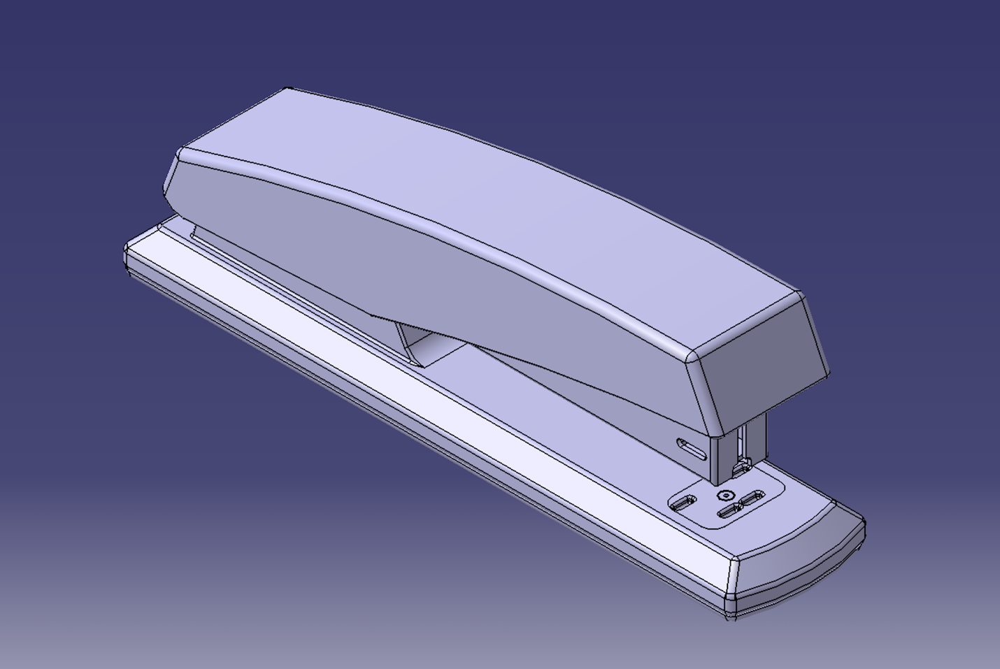
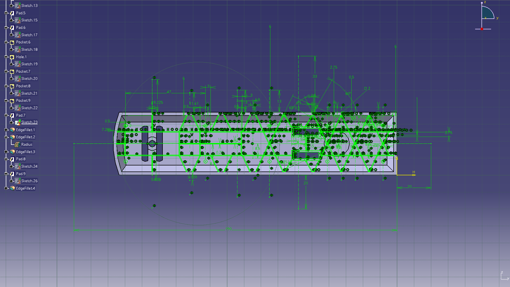
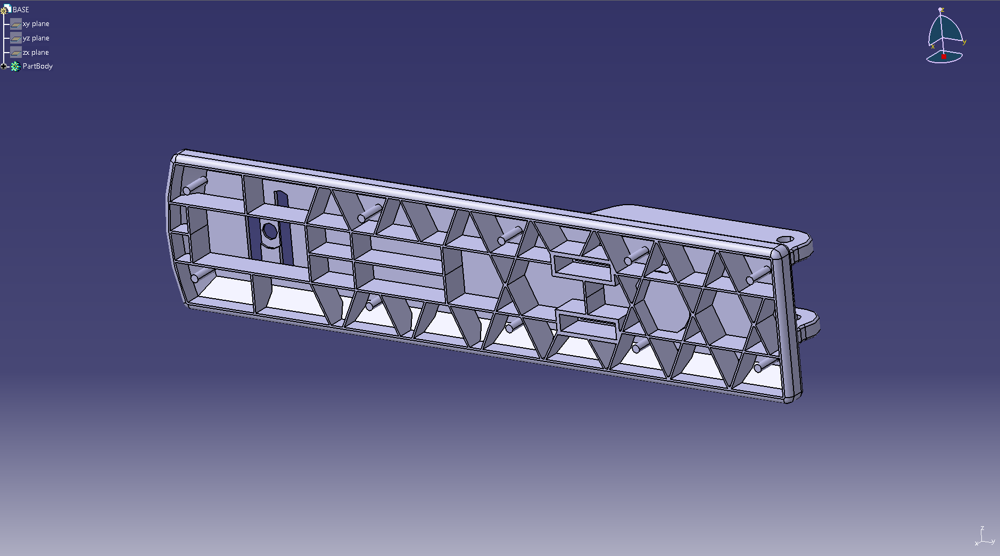
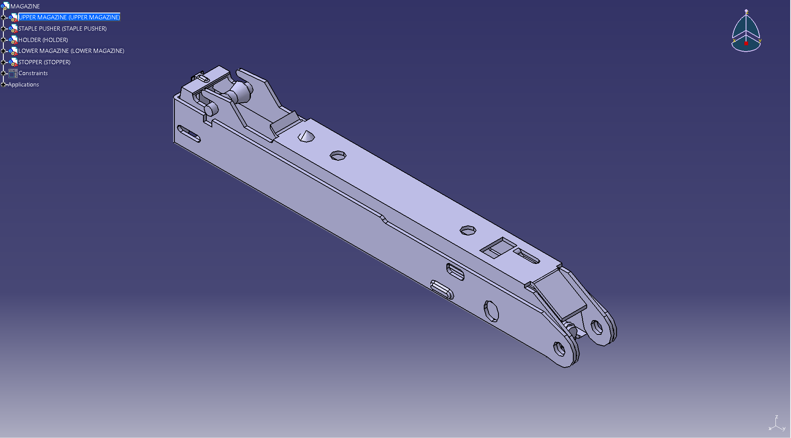
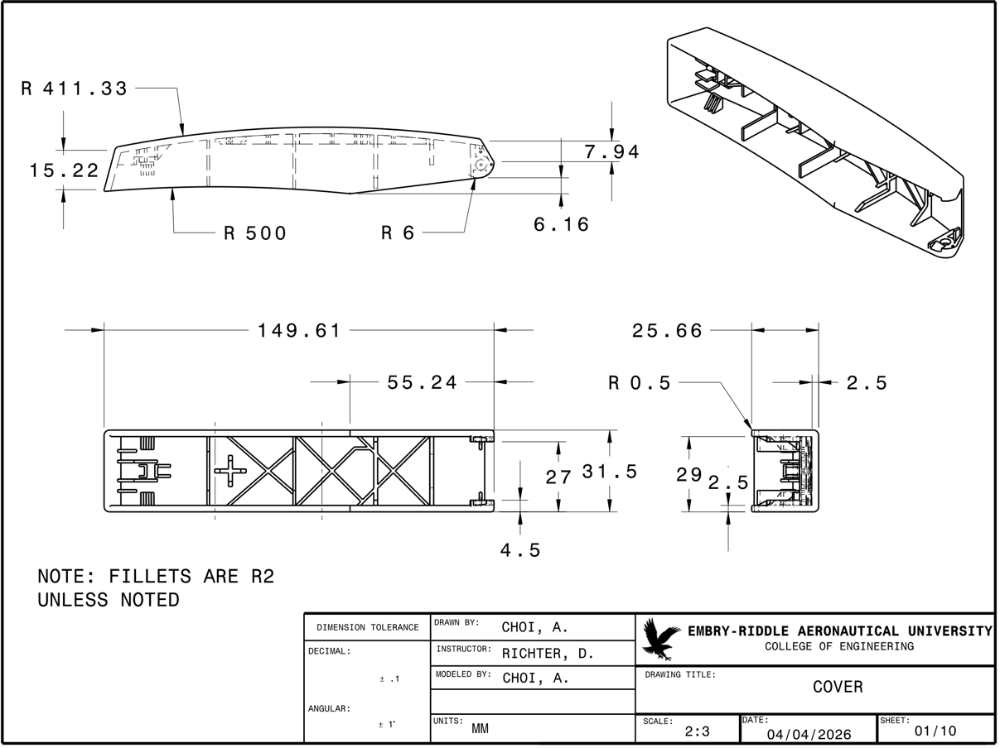
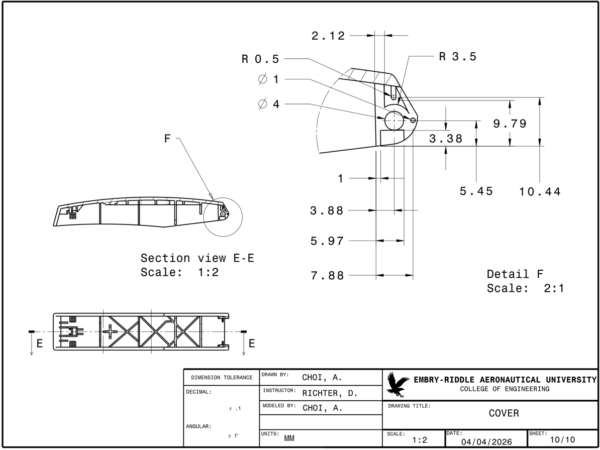

Measure & interpret
Captured overall dimensions, radii, thicknesses, openings, and interfaces from multiple physical views.
EGR 120 · Individual final project · CATIA V5
A complete workflow from physical measurement and component reconstruction to assembly validation and fully dimensioned technical drawings.

The project began with direct measurement and repeated comparison against a physical desktop stapler. Each component was modeled independently while preserving the interfaces required for the final assembly.
The base presented the largest geometric challenge. Its internal ribs, cutouts, curved surfaces, mounting features, and mating geometry required an extensive network of dimensioned sketches and carefully sequenced features.


Captured overall dimensions, radii, thicknesses, openings, and interfaces from multiple physical views.
Built each part with constrained sketches and feature sequences appropriate to its manufacturing geometry.
Positioned components using established mating features and checked dimensional consistency across interfaces.
Produced orthographic, sectional, detail, and isometric drawings for the finalized design.

The assembly was completed in stages using the mating interfaces established during component development. The successful fit of all components validated the dimensional consistency of the individual models.
The completed assembly preserved the physical stapler's overall scale, proportions, and part-to-part relationships.

The drawing package documents external dimensions, internal geometry, tolerances, and critical features through orthographic, sectional, detail, and isometric views.
The selected sheets below show the cover's overall geometry and a detailed sectional treatment of its front pivot feature.


Result